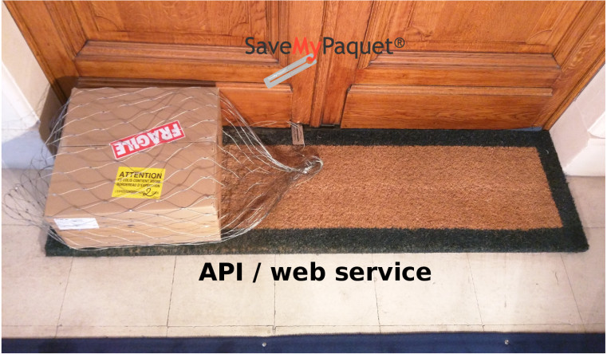

Évolution de la documentation
| Version | Nature des changements | Date |
|---|---|---|
| 1.0 | Création du document (Ahmed MAHI – S3i Business ) | 26/10/2017 |
| 1.1 | Mise niveau par rapport a quelques améliorations de l ’ API ( Ahmed MAHI – eComTech ) | 27/03/2018 |
| 1.2 | L ’ ajout de l ’ adresse de picking( Ahmed MAHI – eComTech ) | 14/04/2018 |
Table des matières
Présentation
Le présent document est destiné au e-commerçants, il décrit les API de communication et échange des données entre Save My Paquet et leurs sites web, L'API est basé sur des web service de type REST. Les opérations sont donc réalisées uniquement avec des requêtes HTTP GET ou POST. La sortie des fonctions de l'API sont uniquement proposé en JSON.
1. Authentification.
L ’ application cliente ( de l ’ e-commerçant ) dispose des informations suivantes :
- Un identifiant (email)
- Un mot de passe
L ’ authentification se fait selon l ’ étape suivante : L ’ application cliente demande à s ’ authentifier en spécifiant son identifiant et mot de passe : L ’ application serveur va répondre avec le token de session généré qui dispose d ’ une durée de vie limitée. Ce token sera utiliser durant les demande des API qui demandes une authentification préalable.
Exemple de réponse : {"token":"1NiJ9.eyJzdWIiOjUsImlzcyI6Imh0dHA6Ly9zbXlwLmFobWVkbWFoaS5jb20vYXBpL2F1dGgvb G9naW4iLCJpYXQiOjE1MDkwMTQ3MzMcCI6MTUwOTAxODMzMywibmJmIjoxNTA5MDE0NzMzLCJq dGkiOiIySHFzb05SWmplS09EWXl3InOyZRBDiMV37YXh8QOZpJEM"}
URL
https://api.savemypaquet.com/api/auth/login
Méthode
POST
Paramètres obligatoires
- email : l ’ émail reçut par le e-commerçante pour s ’ identifier au plateforme Save My Paquet
- password : le mot de passe.
En cas de succès
les champs suivant seront retournés toujours en JSON :
- token : avec la valeur du token.
En cas d ’ erreur
["invalid_email_or_password"]
2. Création d’un colis
Cette méthode permet de créer un colis dans le système "Save MyPaquet" et retourne les informations permettant d ’ identifier le colis dans "Save MyPaquet".
URL
https://api.savemypaquet.com/api/colis/new/
Authentification
Méthode POST en JSON avec authentification préalable.
Paramètres obligatoires
-
token : reçu lors de l’identification
-
date_de_commande : format Y-m-d (ex : 2017-10-18)
-
numero_de_commande : numéro de la commande
-
numero_colis : numéro propre au marchand et permettant d’identifier de manière unique le colis. A chaque numero_colis unique du marchand correspondra un unique numéro Save MyPaquet.
-
service : le code du service (0 => Optimum , 1=> Premium , 2 => Premium Fast , 3 => Premium Express)
-
nom_du_client : Nom du destinataire (Prenom et Nom)
-
email_du_client: Email du destinataire
-
tel_client : Numéro de téléphone du destinataire.
-
poids :Poids en kg du colis
-
adresse1 : adresse : ligne 1 du destinataire
-
ville : vile du destinataire
-
code_postal : code postal du destinataire
-
pays : pays du destinataire
-
batiment :
-
etage :
-
porte_position : position de la porte du destinataire par rapport à l’escalier (1ère, 2ème…)
-
porte_cote : le coté du porte par rapport a l’escalier ( 0 => droite, 1 => gauche, 2 => face )
Paramètres optionnels
-
entreprise : Entreprise du destinataire
-
adresse2 :adresse du destinataire: ligne 2
-
porte_indication_supp : indications supplémentaires par rapport au port
-
digicode_1 : Digicode
-
digicode_2 : 2éme Digicode
-
commentaire : commentaire pour livraison
-
picking_adresse1 : adresse de picking si différente de l’adresse du e-commerçant, si ce paramètre est fourni les autre éléments de l’adresse du picking devient
-
obligatoires (picking_code_postal, picking_ville, picking_pays )
-
picking_adresse2 : adresse de picking : ligne 2
-
picking_code_postal : code postal picking
-
picking_ville : ville picking
-
picking_pays: pays picking
En cas de succès
les champs suivant seront retournés:
-
resultat: avec la valeur ok
-
numero_Save_MyPaquet: numéro unique "Save MyPaquet" associé au colis
-
code_barre: code barre Save MyPaquet, associé au colis
-
statut: statut du colis
En cas d’erreur
- errorcode: code d’erreur
- error: texte de l’erreur
3. Validation d’un colis.
Une demande de création de colis n'est pas prise en charge par SaveMyPaquet, il est nécessaire de la confirmer, cette méthode permet donc de valider le colis
URL
https://api.savemypaquet.com/api/colis/validate/
Authentification
Méthode POST en JSON avec authentification préalable.
Paramètres
-
numero_Save_MyPaquet
-
token : reçu lors de l’identification.
En cas de succès
les champs suivant seront retournés:
- resultat: avec la valeur ok
En cas d ’ erreur
- errorcode: code d’erreur
- error: texte de l’erreur
4. Modification d’un colis.
Permets de mettre à jour les information du colis à tout moment ( avant l’édition de l’étiquette ).
URL
https://api.savemypaquet.com/api/colis/update/
Authentification
Méthode POST en JSON avec authentification préalable.
Paramètres obligatoires
- numero_Save_MyPaquet
- token : reçu lors de l’identification.
Paramètres optionnels
Tout les paramètres utiliser lors du création du colis.
En cas de succès
les champs suivant seront retournés:
- resultat: avec la valeur ok
En cas d’erreur
- errorcode: code d’erreur
- error: texte de l’erreur
5. Création d’une étiquette
Permet de générer et récupérer des étiquettes au format PDF.
URL : https://api.savemypaquet.com/api/etiquette/create/
Authentification :Méthode POST en JSON avec authentification préalable.
Paramètres:
-
numero_Save_MyPaquet
-
token : reçu lors de l’identification.
En cas de succès, les champs suivant seront retournés:
- resultat: avec la valeur ok
- url_etiquette: URL du PDF de l’étiquette
- statut: statut du colis
En cas d’erreur:
- errorcode: code d’erreur
- error: texte de l’erreur
6. Statut/Tracker d’un colis
Cette API permet d’avoir le statut du colis.
URL
https://api.savemypaquet.com/api/track/
Authentification
Méthode GET sans authentification préalable.
Paramètres:
- numero_Save_MyPaquet
En cas de succès
les champs suivant seront retournés:
-
resultat: avec la valeur ok
-
statut: statut du colis
-
statut_historique: liste des statuts précédents par lequel le colis est passé
-
last_updated_timestamp : temps unix du dernier changement de statut
-
date_livraison : date de livraison
En cas d’erreur
- errorcode: code d’erreur
- error: texte de l’erreur
7. Annuler un colis
Le colis ne peut être annulé dans les statuts suivants : Livré ( 130 ), En cours de livraison ( 120 )
URL
https://api.savemypaquet.com/api/colis/cancel/
Authentification
Méthode POST en JSON avec authentification préalable.
Paramètres
-
numero_Save_MyPaquet
-
token : reçu lors de l’identification.
En cas de succès
les champs suivant seront retournés toujours en JSON :
- resultat : avec la valeur ok
En cas d’erreur
-
errorcode : code d’erreur
-
error : texte de l’erreur
8. Paramètres
Certains paramètres envoyé ou reçus représenté par des code numérique ci-dessous la signification de chaque paramètre :
8.1 Statuts
| Code | Signification |
|---|---|
| 100 | Demande prise en charge |
| 105 | Validé e-co |
| 110 | Prise en charge |
| 120 | En cours de livraison |
| 130 | Livré |
8.2 Services
| Code | Signification |
|---|---|
| 0 | Optimum en 48 H |
| 1 | Premium avec suivi et photo comme preuve de livraison en 48 H |
| 2 | Premium Fast avec suivi et photo comme preuve de livraison en 24 H |
| 3 | Premium Express avec suivi et photo comme |
8.3 Position de la porte
| Code | Signification |
|---|---|
| 0 | droite |
| 1 | gauche |
| 2 | face |
| Document réalisé par Ahmed MAHI - eComTech | Consultant Technique Web, E-commerce Et Mobile |
| SaveMyPaquet– API / Web service Version 1.2 |